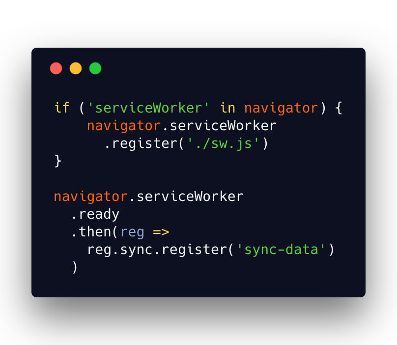

Game over, Downasaur, PWA are winning!
I'm Jevgenija
Web developer @N26 üë©‚Äçüíª
Google Developer Group organizer üéâ
Women TechMakers lead in Latvia üá±üáª

Our plan
- PWA: Why? What? How?
- Service Worker: caching and much more
- Firestore for PWA
- Demo
Wide reach + Engagement = PWA
4 main characteristics
1. Works offline

2. Behaves like a native app
 Source: Air Horner
Source: Air Horner
 Web App Manifest
Web App Manifest

3. Is fast
 App Shell
App Shell
 Source:Google Developers
Source:Google Developers
4. Is secure
 https://
https://
Service Worker


=> Controls network requests
Wait.. but there was AppCache
Is asyncronous by nature
=> Can't access DOM directly
Is it Web Worker

Event-driven
Lives by it's own lyfecycle
Regiter => Install => Activate
1. Register
 1. Register
1. Register
1. Register
1. Register
 1. Register
1. Register
 2. Listen to 'install' event
2. Listen to 'install' event
 2. Listen to 'install' event
2. Listen to 'install' event
2. Listen to 'install' event
2. Listen to 'install' event
 2. Listen to 'install' event
3. Listen to 'activate' event
3. Listen to 'activate' event
3. Listen to 'activate' event
3. Listen to 'activate' event
3. Listen to 'activate' event
3. Listen to 'activate' event
2. Listen to 'install' event
3. Listen to 'activate' event
3. Listen to 'activate' event
3. Listen to 'activate' event
3. Listen to 'activate' event
3. Listen to 'activate' event
3. Listen to 'activate' event
 'fetch' event
'fetch' event
 'fetch' event
'fetch' event
'fetch' event
'fetch' event
 Cool, we can do offline-first!
Cool, we can do offline-first!

Where should offline data be stored?
IndexedDB
How to syncronize data?
ü§∑‚Äç
Web Background synchronization
main.js

sw.js
Background sync event support
Cloud Firestore

Why Firestore?
- Realtime updates
- Offline support
How to get started?
- Create a project in Firebase console
- Enable Firestore
 Let's see how it works!
Let's see how it works!

Useful tools/libraries
- Lighthouse
- Workbox
- sw-precache
- sw-toolbox
- Create React App
- Offline Google Analytics
- PRPL pattern
Jevgenija Zigisova
@jevgeniazi
imeugenia.com
 Source:
Progressive Web Apps: Great Experiences Everywhere
Source:
Progressive Web Apps: Great Experiences Everywhere